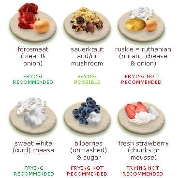

I am a 14 year old boy who attends Lane Tech College Prep in Chicago, Illinois. I came from Mitchell Elementary before Lane Tech, a school located in the Ukrainin Village/West Town area of Chicago, Illinois.

I am a 14 year old boy who attends Lane Tech College Prep in Chicago, Illinois. I came from Mitchell Elementary before Lane Tech, a school located in the Ukrainin Village/West Town area of Chicago, Illinois.
Pierogies are a Polish dumpling which can consist of many different fillings such as cheese, potato, ground meat, fruits, berries, edible mushrooms, and more. Pierogies are often served with sour cream. The pierogies in this recipe will be potato and cheese pierogies.
No one really knows where pierogies were invented, we just know dumplings were most likely invented in China, and that Poland adopted dumplings and made pierogies during the middle ages. Other theories state that Saint Hyacinth brought pierogies from the Far East (Asia) to Europe in the 13th century, or that pierogi were spread by Marco Polo's expeditions through the Silk Road.
